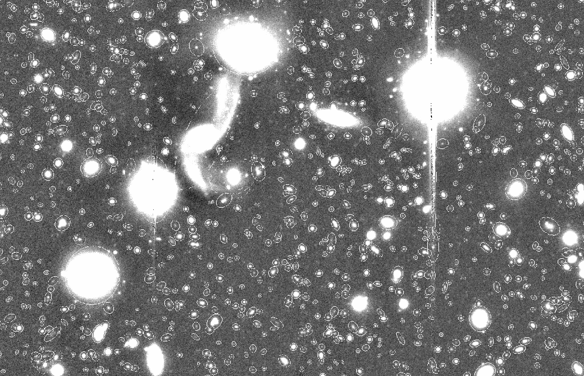
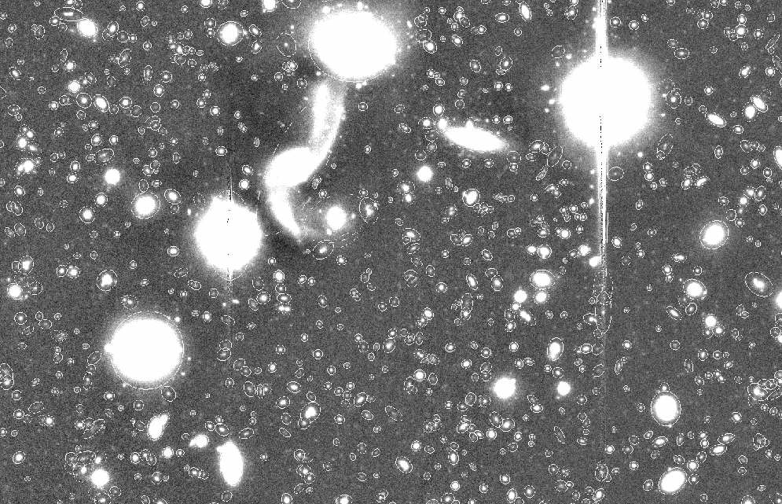
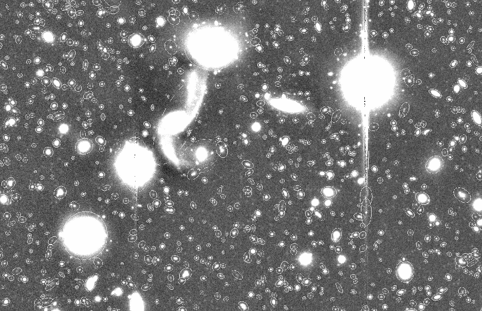
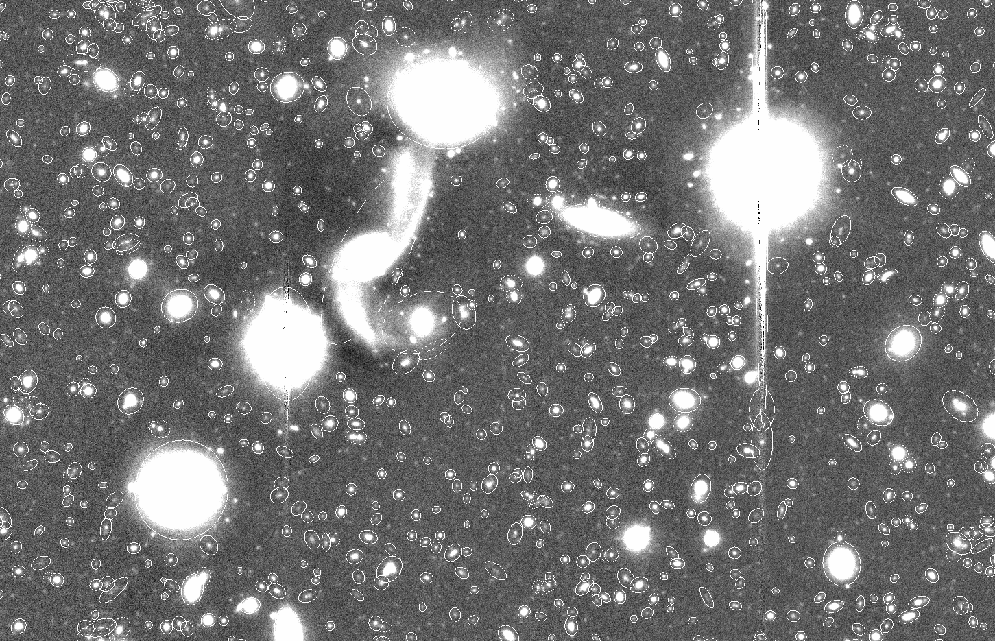

Para este ejemplo vamos a emplear la siguiente imagen FITS, esta es un mosaico apilado usando SWarp hecho con datos de Subaru Suprime-Cam

Empezamos, al igual que antes, por leer el header de la imagen FITS para obtener información que nos sea útil.

GAIN, SATUR_LEVEL, PIXEL_SCALE y SEEING_FWHM
De aquí obtenemos los siguientes datos para usarlos en nuestro archivo de configuración principal de SExtractor:
GAIN |
2835 |
|---|---|
SATUR_LEVEL |
1330 |
| PIXEL_SCALE | $5.160235\times 10^{-5}\times 3600 \approx 0.186\ \text{arcsec/pixel}$ |
SEEING_FWHM |
0.789 |
Ahora, vamos a determinar que filtro de convolución vamos a emplear, esto lo hacemos al igual que con la imagen anterior del Legacy survey:
$$ FWHM_{pix}=\frac{0.789}{0.186}\approx 4.2 $$
Con esta escala del FWHM en píxeles podemos determinar que el filtro conveniente a usar es gauss_3.0_5x5.conv, ya con estos parámetros iniciales modificados podemos empezar a determinar el background, para ello usaremos los parámetros que están por defecto (BACK_SIZE=64 y BACK_FILTERSIZE=3) y pedimos las imagenes de chequeo BACKGROUND, -BACKGROUND.

-BACKGROUND (der), podemos notar como algunos objetos perdieron algo de brillo.

BACKGROUND)
En la figura anterior podemos observar algunas estrellas que parecen ser estrellas saturadas, sin embargo, el resto de la imagen parece estar bien, por lo que podemos continuar con el análisis de la imagen con los parámetros por defecto. Posteriormente, vamos a determinar los valores de umbralización que utilizará SExtractor, los parámetros DETECT_THRESH y ANALYSIS_THRESH estarán en un valor de 1.5, y el parámetro DETECT_MINAREA tomaremos distintos valores (3,5,7,10,12,15) para ver como cambia el número de objetos detectados. Además, pediremos una imagen de chequeo APERTURES.
DETECT_MINAREA |
Objetos detectados | Objetos extraídos |
|---|---|---|
| 3 | 98261 | 85947 |
| 5 | 92334 | 81911 |
| 7 | 87856 | 78674 |
| 10 | 81917 | 73842 |
| 12 | 78568 | 71028 |
| 15 | 73911 | 67043 |





APERTURES con distintos valores de DETECT_MINAREA, a) 3, b) 5, c) 7, d) 10, e) 12, f) 15. Podemos notar que conforme aumenta el valor de DETECT_MINAREA el número de objetos detectados disminuye.
APERTURES, a la izquierda con DETECT_MINAREA=3 y a la derecha con DETECT_MINAREA=15.
Como se hablo para el ejemplo con la imagen anterior, el valor que eliges para estos parámetros depende de los objetos que se quieran observar, para este caso tomaremos el valor de DETECT_MINAREA=5, con esto podemos pasar con la parte de separación de fuentes deblending, para ello vamos a modificar los parámetros DEBLEND_NTHRESH y DEBLEND_MINCONT.
Para el proceso de deblending vamos a tomar el parámetro DEBLEND_NTHRESH en 32 niveles y DEBLEND_MINCONT en 4 distintos valores (0.001, 0.005, 0.01, 0.05), para ver como cambia el número de objetos detectados y extraídos.